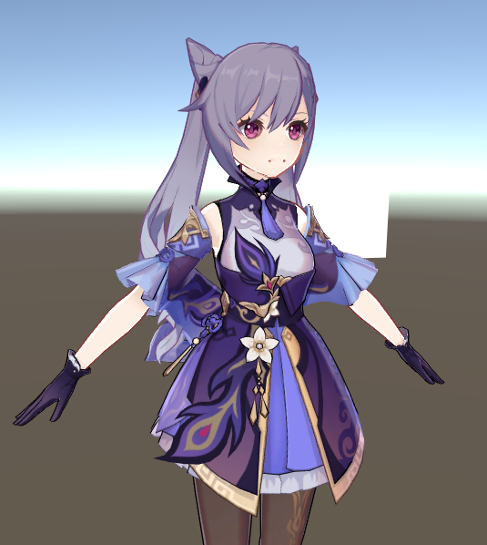
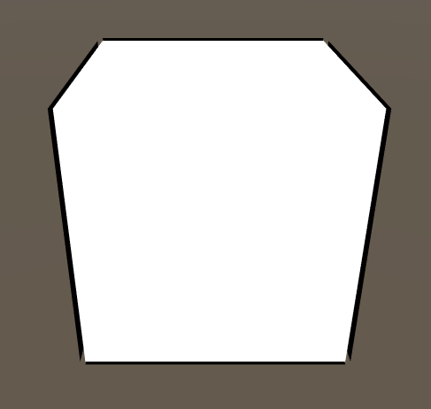
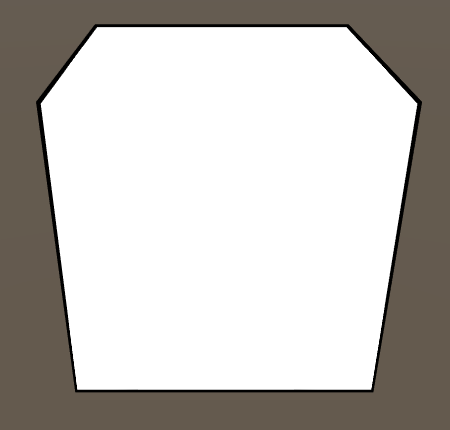
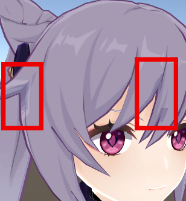

描边是卡通渲染的基础效果之一，也是卡通渲染中的一个难点。
在此篇中，我们使用的描边法是backface法。
backface法的优点很多，实现方法简单，性能友好，可以通过在顶点色里储存该处扩张距离来实现描线粗细的变化；但是对于拥有内凹形状的模型，会出现背面面片遮挡正面面片的情况。
实现效果

实现过程
原理就是通过多pass绘制，在描边的pass中进行cull front。在顶点着色器里将顶点沿着法线方向移动一段距离（移动距离的多少会决定描线的宽度），得到的视觉效果就是人物得到了一个轮廓的描边。
用户可以输入参数控制描线宽度。
1
2
3
4
5
6
7
8
9
10
11
12
13
14
15
16
17
18
19
20
21
22
23
24
25
26
27
28
29
30
31
32
33
34
35
36
37
38
39
40
41
42
43
44
45
46
47
48
49
50
51
52
53
54
| Pass{
Name "OUTLINE"
Tags{ "LightMode" = "Always" }
Cull Front
ColorMask RGB
Blend SrcAlpha OneMinusSrcAlpha
CGPROGRAM
#pragma vertex vert
#pragma fragment frag
#include "UnityCG.cginc"
struct appdata {
float4 vertex : POSITION;
float3 normal : NORMAL;
float4 uv : TEXCOORD0;
};
struct v2f {
float4 pos : SV_POSITION;
float4 uv : TEXCOORD0;
};
uniform float _OutlineWidth;
sampler2D _MainTex;
float4 _OutlineColor;
v2f vert(appdata v) {
v2f o;
o.pos = UnityObjectToClipPos(v.vertex);
float3 norm = mul((float3x3)UNITY_MATRIX_IT_MV, v.normal);
float2 extendDir = normalize(TransformViewToProjection(norm));
o.pos.xy += extendDir * (o.pos.w * _OutlineWidth * 0.05);
o.uv = v.uv;
return o;
}
float4 frag(v2f i) :COLOR{
float4 c = tex2D(_MainTex, i.uv);
return float4(c.rgb* _OutlineColor.rgb, 1.0);
}
ENDCG
}
|
一些问题
描边断开问题
第一个问题是backface法中常见的问题，即法线不连续产生的线条断开问题。这个问题的产生是因为unity的mesh中储存的法线信息为面法线，当遇到两个面相接的顶点时，因为法线信息产生突变，就会遇到这种结果。

在边缘尖锐处，会发生明显的线条断开
我们的模型中也有这个问题
解决方式是在模型导入unity前就进行平滑法线的操作，或者在unity里使用编辑器工具/脚本来动态平滑法线。具体操作是将相同位置的顶点法线数据进行平均计算，计算的结果就是平滑后的法线。
这是一个简单的平滑法线脚本：
1
2
3
4
5
6
7
8
9
10
11
12
13
14
15
16
17
18
19
20
21
22
23
24
25
26
27
28
29
30
31
32
33
34
35
36
37
38
39
40
41
42
43
44
45
46
47
48
49
50
51
52
53
54
55
| using System.Collections;
using System.Collections.Generic;
using UnityEngine;
public class SmoothNormal : MonoBehaviour
{
Mesh MeshNormalAverage(Mesh mesh)
{
Dictionary<Vector3, List<int>> map = new Dictionary<Vector3, List<int>>();
for (int v = 0; v < mesh.vertexCount; ++v)
{
if (!map.ContainsKey(mesh.vertices[v]))
{
map.Add(mesh.vertices[v], new List<int>());
}
map[mesh.vertices[v]].Add(v);
}
Vector3[] normals = mesh.normals;
Vector3 normal;
foreach(var p in map)
{
normal = Vector3.zero;
foreach (var n in p.Value)
{
normal += mesh.normals[n];
}
normal /= p.Value.Count;
foreach (var n in p.Value)
{
normals[n] = normal;
}
}
var tangents = new Vector4[mesh.vertexCount];
for (var j = 0; j < mesh.vertexCount; j++)
{
tangents[j] = new Vector4(normals[j].x, normals[j].y, normals[j].z, 0);
}
mesh.tangents= tangents;
return mesh;
}
void Awake()
{
if (GetComponent<MeshFilter>())
{
Mesh tempMesh = (Mesh)Instantiate(GetComponent<MeshFilter>().sharedMesh);
tempMesh=MeshNormalAverage(tempMesh);
gameObject.GetComponent<MeshFilter>().sharedMesh = tempMesh;
}
if (GetComponent<SkinnedMeshRenderer>())
{
Mesh tempMesh = (Mesh)Instantiate(GetComponent<SkinnedMeshRenderer>().sharedMesh);
tempMesh = MeshNormalAverage(tempMesh);
gameObject.GetComponent<SkinnedMeshRenderer>().sharedMesh = tempMesh;
}
}
}
|

挂上脚本后的效果
脚本中我把最后平滑后得到的信息存在了模型的切线数据中，而不是直接覆盖原来的法线信息，这是有原因的：根据效果发现平滑后的法线对光照也有点影响，部分区域会出现不正常的阴影效果。

我的解决方法是把平滑后的法线结果存在切线数据里，在绘制描边的那个pass里用法线时直接取切线里的数据，而计算阴影的pass用原来的法线数据。这样既能在描边时用到平滑的法线，在计算光照时也能不受影响。
最后结果：
效果还算不错
去除一些不必要的线条的问题
其实这个问题就是backface法里通过贴图的通道控制线条粗细是一件事
因为眼珠与脸是不同的材质，所以在眼眶周围也会出现一圈描线。
按照绘画的习惯，一般此处我们是不会在此处添加线条的。所以我们需要一个能控制线条粗细的输入，或者像乐乐姐的做法一样，控制下该处法线的z offest，让线条被遮蔽，归根结底还是需要一张能控制的贴图数据。
可以通过basecolor的alpha通道来进行这项操作，技术上的实现很简单，就是多读下tex的alpha通道值，作为粗线宽外扩；但是比较难的是在美术上绘制一张这样的贴图。一般可以通过编辑器来绘画，这方面的实现就放在后续中如果有时间再实现。